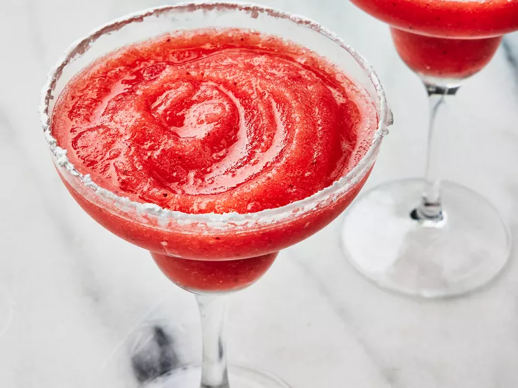

Yummy Frozen Margarita!

Description
On a hot summer's day, there are few things more regreshing than a
cool frozen strawberry margarita. Whether enjoyed poolside, witch ships and salsa,
or simply on your front porch, this strawberry margarita is sure to knock your socks
off with its tasty flavors
Ingredients
- 2 cups ice cubes, or as needed
- 6 fluid ounces tequila
- 2 fluid ounces triple sec
- 8 ounces frozen sliced strawberries in syrup
- 4 fluid ounces frozen limeade concentrate
Steps
- Gather ingredients and fill a blendder with ice cubes.
Pulse until ice is crushed.
- Pour in tequila and triple sec, then add strawberries and limeade concentrate
- Blend until smooth, about 30 seconds. Pour into four margarita glasses and serve immediately.